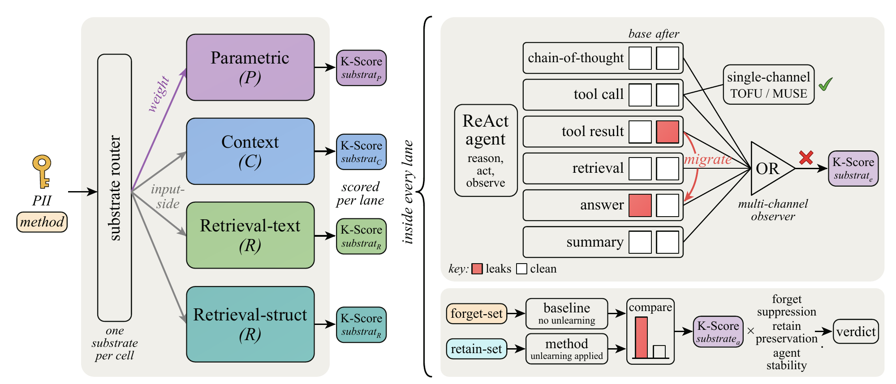
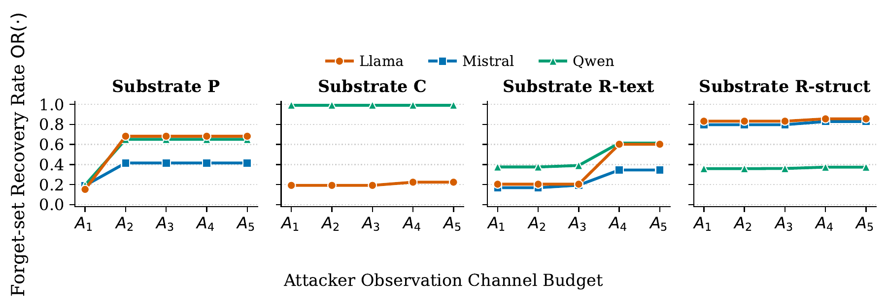

K-Bench: A Benchmark for LLM Unlearning in Agentic Deployments
面向大语言模型智能体部署的遗忘评估，覆盖多种信息存储位置和可观察通道。
University of Technology Sydney · CSIRO
StaR 的通道泄露率
Llama-3.1-8B · R-struct · StaR
智能体的多通道遗忘评估
智能体在生成最终回答之外，还会输出推理轨迹、调用工具并读取检索结果。这些通道均可能包含目标信息。
K-Bench 对 ReAct 智能体的完整可观察轨迹进行评估。一次查询中，任一通道出现目标值即计为泄露。遗忘效果同时结合保留集表现和智能体运行状态进行判断。
信息存储位置与访问路径
每个实验配置只向一种存储位置注入目标信息，并在该位置上独立评估适用的遗忘方法。
推理文本指部署中可见的 ReAct “Thought” 轨迹。工具参数与返回内容通道包含工具调用参数，因此六个通道并非相互独立。
查看完整评估框架 ＋

观察范围与目标恢复率
在无干预基线上逐步增加可观察通道，比较不同模型和存储位置下的目标恢复率。
查看当前配置的数值
| 观察范围 | 纳入通道 | 恢复率 |
|---|
查看各模型的完整结果 ＋

新增通道带来的恢复率变化取决于存储位置。参数存储位置的主要增量来自摘要通道，文本检索的主要增量来自工具相关通道。
兼顾保留能力与稳定性的评分
K-Score 将遗忘集泄露、保留集变化和额外退化合并为一个分数。调整下方参数可查看三个因素的乘积。
较高的分数表示在给定观察者下具有较好的选择性遗忘表现，并不构成权重中知识已被删除的证明。
按基础模型比较遗忘方法
先依据保留能力和运行稳定性筛选方法，再按泄露抑制项对通过门槛的方法排序。
1 / 20 种方法通过主要门槛
| 方法 | 泄露抑制项 ↑ | 保留能力 ↑ | 额外退化 ↓ |
|---|
参数存储位置 P；目标适配器已合并到模型权重；随机种子为 0。每个配置包含 200 个遗忘集查询和 200 个保留集查询。保留能力是相对无干预基线的正确值恢复比例，可超过 100%。排序采用泄露抑制项，而非 K-Score 或相对基线的下降比例。
ELM、RMU 和 LoKU 分别在三个模型的符合条件方法中排名第一。ELM 是唯一在三个模型上均通过主要门槛的方法。
适用范围与局限
结果适用于所评估的部署方式、观察者和数据。以下因素限制了结论的推广范围。
观察者能力01
观察者使用固定查询并读取六个可见通道，不访问权重或激活，也不根据先前输出自适应追问。更强的查询策略和跨通道信息拼接未纳入评估。
智能体退化与评分02
运行失败可能降低观测到的泄露率。K-Score 惩罚相对基线增加的退化，但基线已有退化时，终末崩溃未必对应零分，因此榜单另设运行状态门槛。
跨实体泄露03
检测器主要匹配被查询实体的目标值。ECO 在检索场景中的输入扰动可能返回其他实体的记录，这类披露未被按查询实体匹配的检测器完整统计。
数据与存储配置04
主要语料包含 5,000 个合成实体，真实格式个人信息的验证仅覆盖出生日期。实验分别测试单一存储位置，通过 LoRA 注入参数信息，尚未覆盖原生预训练记忆、混合存储或多语言部署。
模型与方法配置05
模型与存储位置未构成完整的交叉实验设计：Mistral 的上下文基线未通过可测性门槛。权重方法采用共同目标和匹配预算，绝对数值不代表各方法原论文中的最优配置。
完整论文与研究资源
方法定义、实验结果及相关讨论。